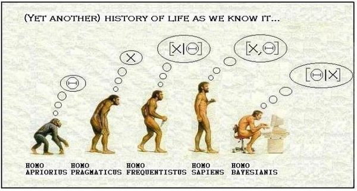

CE-062C - Tópicos: Modelagem Bayesiana


Informações sobre a oferta da disciplina
- Curso: Estatística e Ciência de Dados
- Período: primeiro semestre de 2026
- Horários e Locais:
- Seg, 20:45 - 22:30h, Lab B
- Qua, 19:00 - 20:30h, Lab B
- Professores Responsáveis:
- Paulo Justiniano Ribeiro Jr.
- Horários de atendimento do professor (sala do LEG):
- segundas e terças, 17:00 - 19:00 (preferenciais).
- Outros horários podem ser agendados previamente por email.
- Fernando Pol Mayer
- Horários de atendimento do professor (sala do LEG):
- . definir
- Outros horários podem ser agendados previamente por email.
- Paulo Justiniano Ribeiro Jr.
- Frequência: de acordo com as normas da Universidade, mínimo de 75%
- A Nota na disciplina será dada pela média de avaliações e
trabalhos/apresentações.
- Critérios para aprovação:
- Frequência de pelo menos 75% e nota igual ou acima de 70 → Aprovação sem Exame Final.
- Frequência de pelo menos 75% e Nota entre 40 e 70 → Exame Final.
- Média entre Nota e Exame Final igual ou acima de 50 → Aprovação.
- Nota inferior a 40 ou presença inferior a 75% → Reprovação.
- Média entre Nota e Exame Final inferior a 50 → Reprovação.
- Critérios para aprovação:
Calendário 2026 (cursos de 15-18 semanas)
- Resolução 22/25 - CEPE - Calendário para o ano de 2026
- Feriados/recessos:
- 03/04 (sex) Feriado: Paixão de Cristo
- 21/04 (ter) Feriado: Tiradentes
- 01/05 (sex) Feriado: Dia do trabalho
- 04/06 (qui) Feriado: Corpus Christi
- Avaliação (datas a confirmar):
- A nota na disciplina a média ponderada de avaliações (90%) e
trabalho (10%).
- 25/03/2026: Primeira Avaliação
- 06/05/2026: Segunda Avaliação
- 17/06/2026: Terceira Avaliação
- a definir/05/2026: Entrega e apresentação dos trabalhos. (pode ser antecipada a pedido)
- 28/06/2026: Prova Final
- Notas das avaliações
- Critérios para aprovação:
- Frequência de pelo menos 75% e nota igual ou acima de 70 → Aprovação sem Exame Final.
- Frequência de pelo menos 75% e Nota entre 40 e 70 → Exame Final.
- Média entre Nota e Exame Final igual ou acima de 50 → Aprovação.
- Nota inferior a 40 ou presença inferior a 75% → Reprovação.
- Média entre Nota e Exame Final inferior a 50 → Reprovação.
- A nota na disciplina a média ponderada de avaliações (90%) e
trabalho (10%).
Programa/objetivos da disciplina
- Introdução à inferência Bayesiana.
- Aplicações.
Conhecimento prévio
- É esperado que participantes tenham cursado/tenham conhecimento
sobre:
- Probabilidades (1)
- Inferência Estatística
- Estatística Computacional
- Regressão
- Inferência Bayesiana (nocções introdutórias como em CE-315)